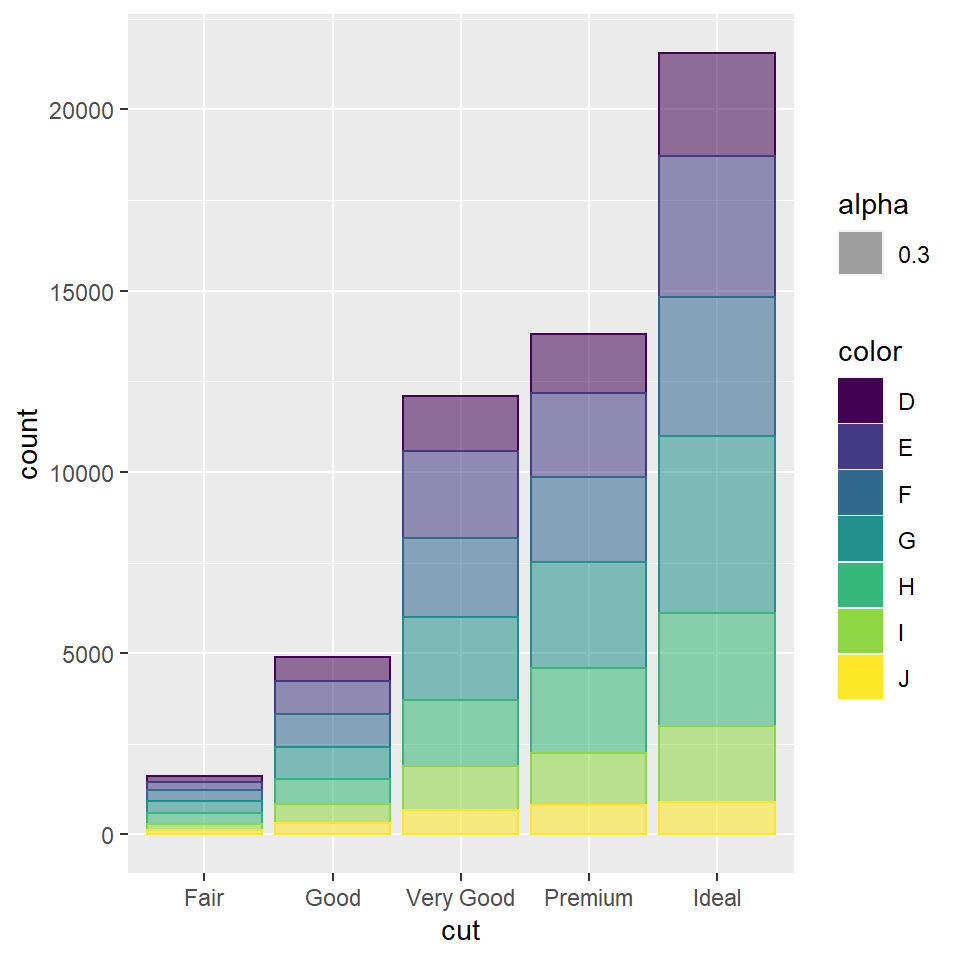
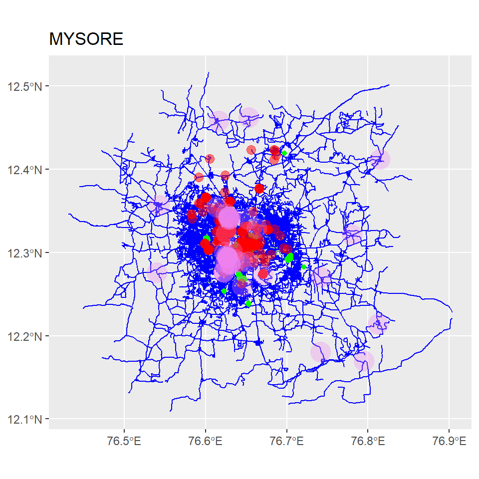

HI!! I’m Aditi and you’re going to see a few of my favorite graphs and maps that I made using R Studio.
How are characters related to each other?
## from to weight type
## 1 Jake Amy 3 romantic
## 2 Jake Charles 3 friends
## 3 Jake Raymond 3 friends
## 4 Jake Rosa 2 friends
## 5 Jake Terry 2 friends
## 6 Jake Gina 2 friends
## 7 Jake Hitchcock 1 friends
## 8 Jake Scully 1 friends
## 9 Amy Charles 2 friends
## 10 Amy Raymond 3 friends
## 11 Amy Rosa 2 friends
## 12 Amy Terry 1 friends
## 13 Amy Gina 1 friends
## 14 Amy Hitchcock 1 friends
## 15 Amy Scully 1 friends
## 16 Rosa Raymond 2 friends
## 17 Rosa Terry 1 friends
## 18 Rosa Charles 2 friends
## 19 Rosa Gina 2 friends
## 20 Rosa Hitchcock 1 friends
## 21 Rosa Scully 1 friends
## 22 Terry Charles 3 friends
## 23 Terry Gina 2 friends
## 24 Terry Raymond 3 friends
## 25 Terry Hitchcock 1 friends
## 26 Terry Scully 1 friends
## 27 Charles Gina 3 romantic
## 28 Charles Raymond 2 friends
## 29 Charles Hitchcock 1 friends
## 30 Charles Scully 1 friends
## 31 Gina Raymond 3 friends
## 32 Gina Hitchcock 1 friends
## 33 Gina Scully 1 friends
## 34 Raymond Hitchcock 1 friends
## 35 Raymond Scully 1 friends
## 36 Hitchcock Scully 3 friends## X name sex occupation
## 1 1 Jake M Detective
## 2 2 Amy F Sergeant
## 3 3 Rosa F Detective
## 4 4 Terry M Lieutenant
## 5 5 Charles M Detective
## 6 6 Gina F Civilian Administrator
## 7 7 Raymond M Captain
## 8 8 Hitchcock M Detective
## 9 9 Scully M Detective## from to weight type
## 1 Jake Amy 3 romantic
## 2 Jake Charles 3 friends
## 3 Jake Raymond 3 friends
## 4 Jake Rosa 2 friends
## 5 Jake Terry 2 friends
## 6 Jake Gina 2 friends
## 7 Jake Hitchcock 1 friends
## 8 Jake Scully 1 friends
## 9 Amy Charles 2 friends
## 10 Amy Raymond 3 friends
## 11 Amy Rosa 2 friends
## 12 Amy Terry 1 friends
## 13 Amy Gina 1 friends
## 14 Amy Hitchcock 1 friends
## 15 Amy Scully 1 friends
## 16 Rosa Raymond 2 friends
## 17 Rosa Terry 1 friends
## 18 Rosa Charles 2 friends
## 19 Rosa Gina 2 friends
## 20 Rosa Hitchcock 1 friends
## 21 Rosa Scully 1 friends
## 22 Terry Charles 3 friends
## 23 Terry Gina 2 friends
## 24 Terry Raymond 3 friends
## 25 Terry Hitchcock 1 friends
## 26 Terry Scully 1 friends
## 27 Charles Gina 3 romantic
## 28 Charles Raymond 2 friends
## 29 Charles Hitchcock 1 friends
## 30 Charles Scully 1 friends
## 31 Gina Raymond 3 friends
## 32 Gina Hitchcock 1 friends
## 33 Gina Scully 1 friends
## 34 Raymond Hitchcock 1 friends
## 35 Raymond Scully 1 friends
## 36 Hitchcock Scully 3 friends## X name sex occupation
## 1 1 Jake M Detective
## 2 2 Amy F Sergeant
## 3 3 Rosa F Detective
## 4 4 Terry M Lieutenant
## 5 5 Charles M Detective
## 6 6 Gina F Civilian Administrator
## 7 7 Raymond M Captain
## 8 8 Hitchcock M Detective
## 9 9 Scully M Detective## id X label group occupation
## 1 1 1 Jake Male Detective
## 2 2 2 Amy Female Sergeant
## 3 3 3 Rosa Female Detective
## 4 4 4 Terry Male Lieutenant
## 5 5 5 Charles Male Detective
## 6 6 6 Gina Female Civilian Administrator
## 7 7 7 Raymond Male Captain
## 8 8 8 Hitchcock Male Detective
## 9 9 9 Scully Male Detective## from to
## 1 1 2
## 2 1 5
## 3 1 7
## 4 1 3
## 5 1 4
## 6 1 6
## 7 1 8
## 8 1 9
## 9 2 5
## 10 2 7
## 11 2 3
## 12 2 4
## 13 2 6
## 14 2 8
## 15 2 9
## 16 3 7
## 17 3 4
## 18 3 5
## 19 3 6
## 20 3 8
## 21 3 9
## 22 4 5
## 23 4 6
## 24 4 7
## 25 4 8
## 26 4 9
## 27 5 6
## 28 5 7
## 29 5 8
## 30 5 9
## 31 6 7
## 32 6 8
## 33 6 9
## 34 7 8
## 35 7 9
## 36 8 9It shows how each character is connected to the other,i.e shows the relationships between them.
I used circle as an icon for each character and the females are represented by voilet and males are represented by sky blue color.
How many diamonds are very good? I chose the DIAMONDS dataset for this graph.

I plotted a graph of the count vs the cut to find how many diamonds are of very good cut.
I used the dataset of prettymapr to plot a few specific data on the city of Mysore.
## min max
## x 76.49536 76.81536
## y 12.14518 12.46518## Rows: 22,566
## Columns: 63
## $ osm_id <chr> "8285857", "8285861", "8285890", "8285892", "8~
## $ name <chr> NA, NA, "Sri Harsha Road", "Ashoka Road", "D. ~
## $ AND.importance_level <chr> NA, NA, NA, NA, NA, NA, NA, NA, NA, NA, NA, NA~
## $ AND_a_nosr_r <chr> NA, NA, NA, NA, NA, NA, NA, NA, NA, NA, NA, NA~
## $ GPS_Trail <chr> NA, NA, NA, NA, NA, NA, NA, NA, NA, NA, NA, NA~
## $ access <chr> NA, NA, NA, NA, NA, NA, NA, NA, NA, NA, NA, NA~
## $ addr.city <chr> NA, NA, NA, NA, NA, NA, NA, NA, NA, NA, NA, NA~
## $ alt_name <chr> NA, NA, NA, NA, NA, NA, NA, NA, NA, NA, NA, NA~
## $ alt_name.kn <chr> NA, NA, NA, NA, NA, NA, NA, NA, NA, NA, NA, NA~
## $ alt_name_1 <chr> NA, NA, NA, NA, NA, NA, NA, NA, NA, NA, NA, NA~
## $ area <chr> NA, NA, NA, NA, NA, NA, NA, NA, NA, NA, NA, NA~
## $ bicycle <chr> NA, NA, NA, NA, NA, NA, NA, NA, NA, NA, NA, NA~
## $ bridge <chr> NA, NA, NA, NA, NA, NA, NA, NA, NA, NA, NA, NA~
## $ construction <chr> NA, NA, NA, NA, NA, NA, NA, NA, NA, NA, NA, NA~
## $ covered <chr> NA, NA, NA, NA, NA, NA, NA, NA, NA, NA, NA, NA~
## $ created_by <chr> NA, NA, NA, NA, NA, NA, NA, NA, NA, NA, NA, NA~
## $ crossing <chr> NA, NA, NA, NA, NA, NA, NA, NA, NA, NA, NA, NA~
## $ cutting <chr> NA, NA, NA, NA, NA, NA, NA, NA, NA, NA, NA, NA~
## $ cycleway <chr> NA, NA, NA, NA, NA, NA, NA, NA, NA, NA, NA, NA~
## $ foot <chr> NA, NA, NA, NA, NA, NA, NA, NA, NA, NA, NA, NA~
## $ ford <chr> NA, NA, NA, NA, NA, NA, NA, NA, NA, NA, NA, NA~
## $ highway <chr> "residential", "secondary", "tertiary", "secon~
## $ horse <chr> NA, NA, NA, NA, NA, NA, NA, NA, NA, NA, NA, NA~
## $ incline <chr> NA, NA, NA, NA, NA, NA, NA, NA, NA, NA, NA, NA~
## $ indoor <chr> NA, NA, NA, NA, NA, NA, NA, NA, NA, NA, NA, NA~
## $ int_name <chr> NA, NA, NA, NA, NA, NA, NA, NA, NA, NA, NA, NA~
## $ int_ref <chr> NA, NA, NA, NA, NA, NA, NA, NA, NA, NA, NA, NA~
## $ junction <chr> NA, NA, NA, NA, NA, NA, NA, NA, NA, NA, NA, NA~
## $ lanes <chr> NA, NA, NA, NA, NA, NA, NA, NA, NA, NA, NA, NA~
## $ layer <chr> NA, NA, NA, NA, NA, NA, NA, NA, NA, NA, NA, NA~
## $ level <chr> NA, NA, NA, NA, NA, NA, NA, NA, NA, NA, NA, NA~
## $ lit <chr> NA, NA, NA, NA, NA, NA, NA, NA, NA, NA, NA, NA~
## $ maxspeed <chr> NA, NA, NA, NA, NA, NA, NA, NA, NA, NA, NA, NA~
## $ maxspeed.type <chr> NA, NA, NA, NA, NA, NA, NA, NA, NA, NA, NA, NA~
## $ motor_vehicle <chr> NA, NA, NA, NA, NA, NA, NA, NA, NA, NA, NA, NA~
## $ mtb.scale <chr> NA, NA, NA, NA, NA, NA, NA, NA, NA, NA, NA, NA~
## $ mtb.scale.uphill <chr> NA, NA, NA, NA, NA, NA, NA, NA, NA, NA, NA, NA~
## $ name.alt <chr> NA, NA, NA, NA, NA, NA, NA, NA, NA, NA, NA, NA~
## $ name.en <chr> NA, NA, NA, NA, NA, NA, NA, NA, NA, NA, NA, NA~
## $ name.etymology.wikidata <chr> NA, NA, NA, NA, NA, NA, NA, NA, NA, NA, NA, NA~
## $ name.kn <chr> "ಅಕà³\215ಬರà³\215 ರಸà³\215ತೆ",~
## $ name.old <chr> NA, NA, NA, NA, NA, NA, NA, NA, NA, NA, NA, NA~
## $ name.ur <chr> NA, NA, NA, NA, NA, NA, NA, NA, NA, NA, NA, NA~
## $ noname <chr> NA, NA, NA, NA, NA, NA, NA, NA, NA, NA, NA, NA~
## $ note <chr> NA, NA, NA, NA, NA, NA, NA, NA, NA, NA, NA, NA~
## $ old_name <chr> NA, NA, NA, NA, NA, NA, NA, NA, NA, NA, NA, NA~
## $ old_name.kn <chr> NA, NA, NA, NA, NA, NA, NA, NA, NA, NA, NA, NA~
## $ old_ref <chr> NA, NA, NA, NA, NA, NA, NA, NA, NA, NA, NA, NA~
## $ oneway <chr> NA, NA, "yes", "yes", "yes", NA, NA, NA, NA, N~
## $ ref <chr> NA, NA, NA, NA, NA, NA, NA, NA, NA, NA, NA, NA~
## $ ref.old <chr> NA, NA, NA, NA, NA, NA, NA, NA, NA, NA, NA, NA~
## $ service <chr> NA, NA, NA, NA, NA, NA, NA, NA, NA, NA, NA, NA~
## $ sidewalk <chr> NA, NA, NA, NA, NA, NA, NA, NA, NA, NA, NA, NA~
## $ smoothness <chr> NA, NA, NA, NA, NA, NA, NA, NA, NA, NA, NA, NA~
## $ source <chr> NA, NA, NA, NA, NA, NA, NA, NA, NA, NA, NA, NA~
## $ surface <chr> NA, "asphalt", NA, "asphalt", "asphalt", "asph~
## $ toll <chr> NA, NA, NA, NA, NA, NA, NA, NA, NA, NA, NA, NA~
## $ tracktype <chr> NA, NA, NA, NA, NA, NA, NA, NA, NA, NA, NA, NA~
## $ tunnel <chr> NA, NA, NA, NA, NA, NA, NA, NA, NA, NA, NA, NA~
## $ vehicle <chr> NA, NA, NA, NA, NA, NA, NA, NA, NA, NA, NA, NA~
## $ wheelchair <chr> NA, NA, NA, NA, NA, NA, NA, NA, NA, NA, NA, NA~
## $ width <chr> NA, NA, NA, NA, NA, NA, NA, NA, NA, NA, NA, NA~
## $ geometry <LINESTRING [°]> LINESTRING (76.64894 12.318..., LIN~## Rows: 154
## Columns: 16
## $ osm_id <chr> "28240152", "28413680", "28413759", "28424626", "2842463~
## $ name <chr> "GRS Fantasy Park", "Subbarayanakere Park", "Curzon Park~
## $ addr.city <chr> NA, NA, NA, NA, NA, NA, NA, NA, NA, NA, "Mysuru", NA, NA~
## $ addr.postcode <chr> NA, NA, NA, NA, NA, NA, NA, NA, NA, NA, "570008", NA, NA~
## $ addr.street <chr> NA, NA, NA, NA, NA, NA, NA, NA, NA, NA, "16th Cross Road~
## $ designation <chr> NA, NA, NA, NA, NA, NA, NA, "Vijyangar II stage, near po~
## $ landuse <chr> NA, NA, NA, NA, NA, NA, NA, NA, NA, NA, NA, NA, NA, NA, ~
## $ leisure <chr> "water_park", "park", "park", "park", "park", "park", "p~
## $ name.en <chr> NA, NA, NA, NA, NA, NA, NA, NA, NA, NA, NA, NA, NA, NA, ~
## $ name.kn <chr> NA, "ಸà³\201ಬà³\215ಬರಾಯನಕೆರೆ ಉà²~
## $ opening_hours <chr> NA, NA, NA, NA, NA, NA, NA, NA, NA, NA, NA, NA, NA, NA, ~
## $ operator <chr> NA, NA, NA, NA, NA, NA, NA, NA, NA, NA, NA, NA, NA, NA, ~
## $ source <chr> NA, NA, NA, NA, NA, NA, NA, "known place", NA, NA, "loca~
## $ tourism <chr> "theme_park", NA, NA, NA, NA, NA, NA, NA, NA, NA, NA, NA~
## $ wheelchair <chr> NA, NA, NA, NA, NA, NA, NA, NA, NA, NA, NA, NA, NA, NA, ~
## $ geometry <POLYGON [°]> POLYGON ((76.63517 12.35518..., POLYGON ((76.646~## Rows: 55
## Columns: 8
## $ osm_id <chr> "28918825", "28918827", "28919161", "28919162", "28919228", "~
## $ name <chr> "Winning post", "The pond", "Respite", "The lake", "The bend"~
## $ barrier <chr> NA, NA, NA, NA, NA, NA, NA, NA, NA, NA, NA, NA, NA, NA, NA, N~
## $ golf <chr> "fairway", "fairway", "fairway", "fairway", "fairway", "fairw~
## $ landuse <chr> "grass", "grass", "grass", "grass", "grass", "grass", "grass"~
## $ ref <chr> "18", "1", "17", "6", "4", "3", "16", NA, NA, NA, "6", "10", ~
## $ tee <chr> NA, NA, NA, NA, NA, NA, NA, NA, NA, NA, "white", NA, NA, NA, ~
## $ geometry <POLYGON [°]> POLYGON ((76.66181 12.29608..., POLYGON ((76.66188 12~## Rows: 636
## Columns: 7
## $ osm_id <chr> "3380643217", "3650204586", "3650204587", "3650204588",~
## $ name <chr> "Dodda Alada Mara", NA, NA, NA, NA, NA, NA, NA, NA, NA,~
## $ name.botanical <chr> NA, NA, NA, NA, NA, NA, NA, NA, NA, NA, NA, NA, NA, NA,~
## $ name.kn <chr> "ದೊಡà³\215ಡ ಆಲದಮರ", NA, NA, NA, NA, N~
## $ natural <chr> "tree", "tree", "tree", "tree", "tree", "tree", "tree",~
## $ species <chr> "Ficus benghalensis", NA, NA, NA, NA, NA, NA, NA, NA, N~
## $ geometry <POINT [°]> POINT (76.72106 12.28275), POINT (76.64845 12.267~## [1] 251## [1] 51
I’ve plotted the highways, parks, landuse and natural spots on the map of mysore.
This course was about learning to use R programing as a design tool. I learnt a way too many things and it was overwhelming at first until i realised its still beginner level information. I learnt to use R markdown to create a html document, learnt to make and plot graphs and maps of cities to show data, i learnt to make presentation using R. I think all this will help my practice as an aspiring artist and designer for making presentations, for making visuals to represent data, it will help for organising research data. Arvind is genuinely the best teacher i’ve ever had and if i had to learn R in my school in the 10th or 12th grade i would’ve simply been overwhelmed and avoided the topic but Arvind managed to build interest and enthusiasm in me to learn and troubleshoot the errors as well. Also I want to add that Arvind has great taste in music and i’d love to have access to his playlists. Arvind is a Boomer from Srishti who knows to use “Bruh” now. I wish to have on campus classes with Arvind sometime:)